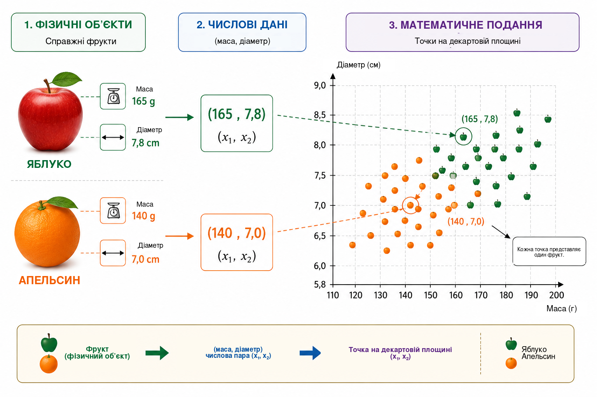
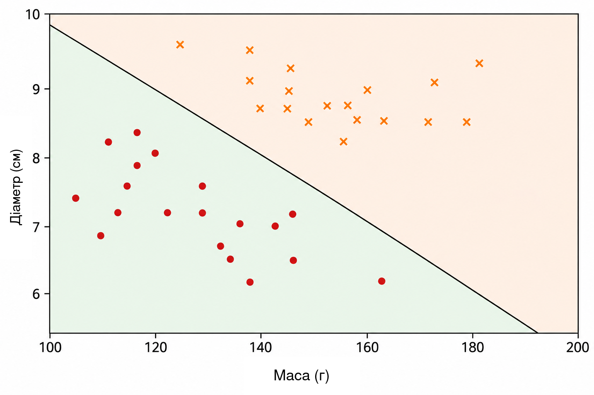
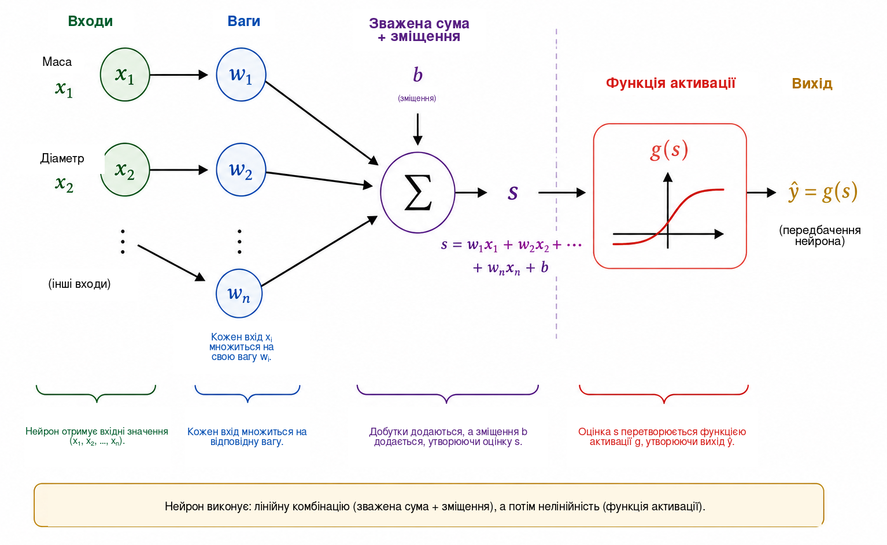
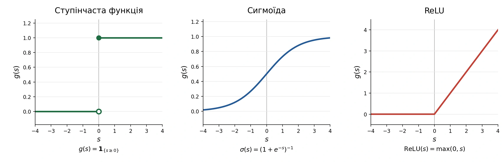
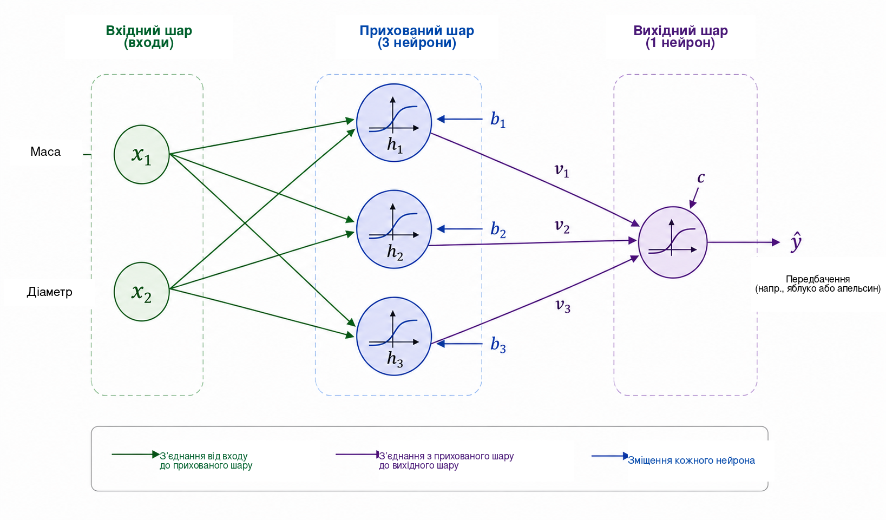
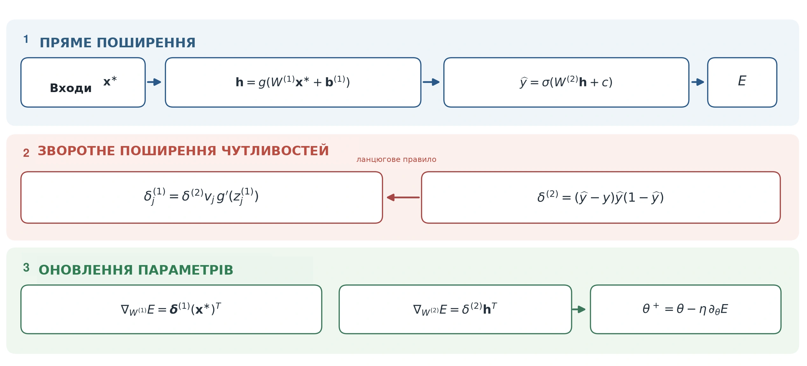
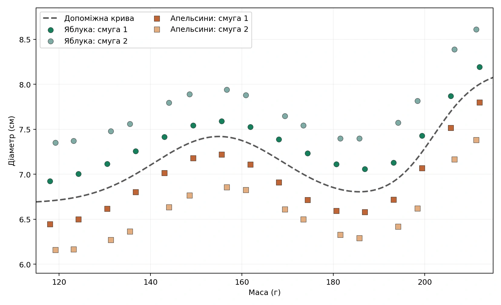
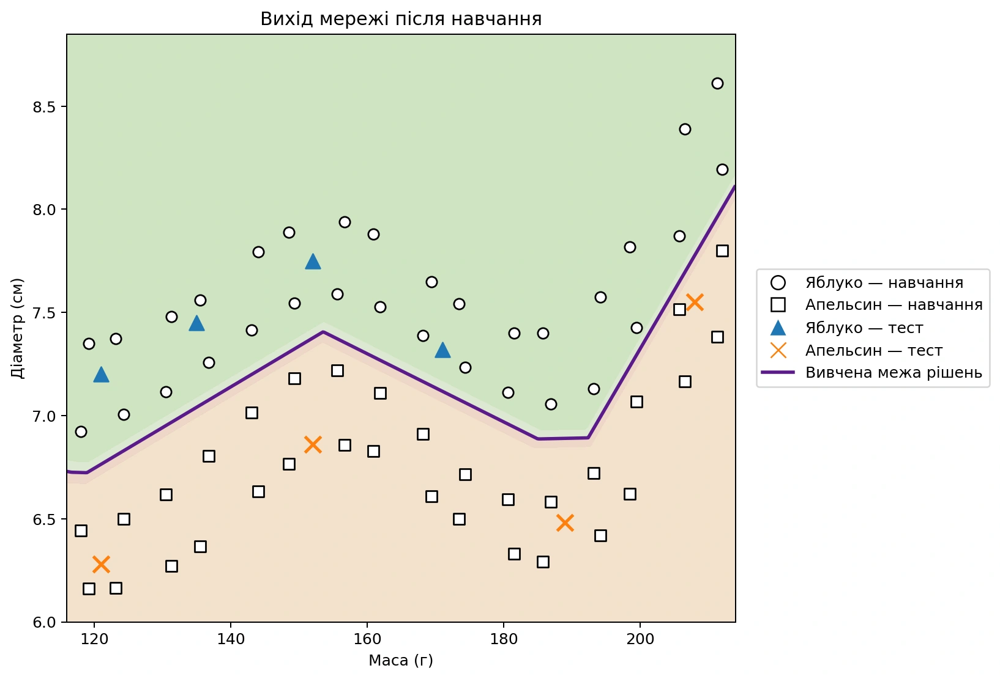

Коли комп’ютер може навчатися?
У повсякденному житті ми майже непомітно для себе постійно розв’язуємо задачі класифікації. Поглянувши на фрукт, швидко визначаємо, яблуко це чи апельсин; отримавши повідомлення на телефон, відрізняємо звичайне спілкування від небажаної реклами; у медичному аналізі кілька вимірювань можуть поєднуватися для підтримки рішення; а у фінансових установах перед наданням кредиту оцінюють багато різних відомостей. У всіх цих прикладах кілька характеристик розглядаються разом, щоб отримати відповідь.
У багатьох традиційних комп’ютерних програмах правила, що визначають цю відповідь, явно задає програміст. Такий підхід добре працює, коли правила відомі й їх можна чітко сформулювати. Він стає менш ефективним, коли дані дуже мінливі або коли важко наперед описати всі умови, потрібні для доброго рішення. Це природно приводить до запитання:
Чи можемо ми створити програму, яка навчиться правилу прийняття рішення на прикладах, замість того щоб отримати це правило наперед?
Це одна з центральних ідей машинного навчання — галузі штучного інтелекту, що вивчає методи налаштування моделей за даними . У задачі навчання з учителем алгоритм отримує приклади разом із правильними відповідями, а ми шукаємо модель, здатну робити корисні передбачення і для випадків, які не використовувалися під час навчання. Серед багатьох моделей, створених для цього, штучні нейронні мережі набули великого значення в розпізнаванні зображень, обробці мови, аналізі сигналів і прогнозуванні часових рядів .
Використання нейронних мереж як містка між математикою, обчисленнями та шкільною освітою вже обговорювали в журналі Professor de Matemática Online Батіста і Мартінс , які описують навчальну діяльність, пов’язану з підготовкою вчителів, Python і розпізнаванням цифр. Ця стаття йде додатковим шляхом. Наша головна мета — показати внутрішню математику невеликої нейронної мережі, починаючи з аналітичної геометрії та крок за кроком доходячи до обчислення градієнтів і ручної реалізації зворотного поширення.
Попри складність сучасних застосувань, математичне ядро нейронної мережі можна ввести за допомогою відносно знайомих ідей. На базовому рівні нейронна мережа є композицією функцій, параметри яких налаштовуються за даними. Ми почнемо з простої геометричної задачі, переосмислимо розділяючу пряму як штучний нейрон, з’єднаємо кілька нейронів, дослідимо роль функцій активації та покажемо, як похідні дають змогу автоматично налаштовувати параметри мережі. Потім реалізуємо повний невеликий приклад у Python, зберігаючи безпосередню відповідність між рівняннями й кодом.
Математичне подання задачі
Щоб зрозуміти, як працює нейронна мережа, почнемо з навмисно простої задачі: відрізнити яблука від апельсинів. Фрукт має багато характеристик, що можуть бути корисними для цього завдання, наприклад колір, масу, діаметр, текстуру й аромат. Проте початкова математична модель не повинна одразу враховувати всю цю складність. Ми використаємо лише дві величини, які легко виміряти: масу в грамах і діаметр у сантиметрах.
Отже, кожен фрукт представлятимемо впорядкованою парою \[(x_1,x_2),\] де \[x_1=\text{маса} \qquad\text{і}\qquad x_2=\text{діаметр}.\]
Таким чином, пара \((155,\;7.2)\) описує фрукт масою \(155\) г і діаметром \(7.2\) см. Замінюючи фізичний об’єкт двома числовими вимірюваннями, ми ставимо кожному фрукту у відповідність точку на декартовій площині: перша координата задає масу, а друга — діаметр. На Рисунку 1 показано таке подання для умовного набору яблук та апельсинів.

Це перетворення змінює видиму природу задачі. Замість прямого запитання, як розпізнати яблуко чи апельсин, можна поставити геометричне питання: як розділити на площині точки, що належать двом класам? Така зміна погляду є фундаментальною для машинного навчання. Зображення, тексти, звуки й експериментальні сигнали мають бути перетворені на числові подання, перш ніж алгоритм зможе їх обробляти. У нашому прикладі кожен об’єкт має лише дві координати; у реальних застосуваннях подання може містити сотні, тисячі або навіть мільйони компонентів. Принцип той самий: кожному прикладу відповідає набір чисел, а модель шукає правило, яке відображає це подання в потрібну відповідь.
Почнемо з найпростішого геометричного правила й запитаємо, чи може одна пряма достатньо добре розділити точки яблук і апельсинів.
Пряма як класифікатор
Після того як кожен фрукт подано точкою на декартовій площині, класифікація стає геометричною задачею: чи може пряма розділити яблука й апельсини? Це питання відображає основну ідею важливого класу методів машинного навчання, відомих як лінійні класифікатори.
Розгляньмо пряму, що проходить крізь хмару даних, як показано на Рисунку 2. Пряма ділить площину на дві півплощини. Якщо більшість точок яблук лежить з одного боку, а більшість точок апельсинів — з іншого, то положення нового фрукта відносно прямої можна використати як правило класифікації. Вимірявши його масу й діаметр, ми представляємо фрукт точкою та визначаємо, з якого боку прямої ця точка лежить.

На декартовій площині \((x_1,x_2)\) пряму можна описати рівнянням \[w_1x_1+w_2x_2+b=0, \qquad (w_1,w_2)\neq(0,0).\]
Вектор \((w_1,w_2)\) перпендикулярний до прямої, тому визначає її орієнтацію, тоді як параметр \(b\) впливає на її положення. Це подання має невелику надлишковість: множення \(w_1\), \(w_2\) і \(b\) на одну й ту саму ненульову сталу дає ту саму пряму. Отже, параметри, що описують межу, не є єдиними. Їхня числова інтерпретація також залежить від масштабу змінних. Оскільки масу вимірюють у грамах, а діаметр у сантиметрах, числові значення \(w_1\) і \(w_2\) не слід безпосередньо порівнювати, не врахувавши різні одиниці вимірювання.
Саме рівняння прямої дає простий спосіб визначити, з якого боку межі лежить точка. Введемо оцінку \[s(x_1,x_2)=w_1x_1+w_2x_2+b.\]
Якщо \(s(x_1,x_2)=0\), точка лежить на прямій. Якщо \(s(x_1,x_2)>0\), вона міститься в одній півплощині; якщо \(s(x_1,x_2)<0\) — в іншій. Якщо домовитися, що додатні значення відповідають яблукам, а від’ємні — апельсинам, правило набуває вигляду \[\begin{cases} s(x_1,x_2)\geq 0 & \Longrightarrow \text{яблуко},\\ s(x_1,x_2)<0 & \Longrightarrow \text{апельсин}. \end{cases}\]
Наприклад, розгляньмо межу, задану параметрами \[w_1=\frac{1}{10}, \qquad w_2=2, \qquad b=-30.\] Для фрукта масою \(160\) г і діаметром \(7.8\) см маємо \[\begin{aligned} s &=\frac{1}{10}\times160+2\times7.8-30\\ &=16+15.6-30\\ &=1.6. \end{aligned}\] Оскільки оцінка додатна, точка лежить у півплощині, яку ми пов’язали з яблуками. Отже, цей класифікатор визначить фрукт як яблуко.
Не кожний вибір \(w_1\), \(w_2\) і \(b\) дає хорошу класифікацію. Деякі прямі погано розділяють дві групи, тоді як інші роблять менше помилок. Задача навчання полягає саме в тому, щоб за попередньо розміченими прикладами визначити значення параметрів, які зменшують певну міру помилки моделі. Замість того щоб безпосередньо програмувати положення прямої, ми хочемо, щоб алгоритм сам налаштовував її коефіцієнти за даними.
Одна пряма може добре працювати, якщо класи приблизно лінійно роздільні. Для складніших наборів даних може знадобитися нелінійна межа. Перш ніж перейти до цього обмеження, переосмислимо щойно побудований класифікатор як елементарну обчислювальну одиницю — штучний нейрон.
Штучний нейрон
У попередньому розділі вираз \[s=w_1x_1+w_2x_2+b\] використовувався, щоб визначити, з якого боку прямої лежить фрукт. Той самий вираз можна розглядати як перший етап обчислення, яке виконує штучний нейрон. Нейрон отримує числові входи, комбінує їх за допомогою ваг і зміщення, а потім застосовує математичну функцію, щоб отримати вихід.
У нашому прикладі входами є маса \(x_1\) і діаметр \(x_2\). Кожен вхід множиться на параметр, який називають вагою; добутки додаються разом зі сталим членом \(b\), який називають зміщенням (bias). На Рисунку 3 цю операцію показано схематично.

Ваги визначають, як зміни входів впливають на оцінку. Якщо \(x_2\) та всі інші величини залишити незмінними, зміна \(\Delta x_1\) змінює \(s\) на \(w_1\Delta x_1\). Аналогічно зміна \(\Delta x_2\) змінює оцінку на \(w_2\Delta x_2\). Важливий і знак: додатна вага означає, що збільшення входу збільшує оцінку, тоді як від’ємна вага дає протилежний ефект. Таке тлумачення слід застосовувати обережно, коли різні змінні мають різні одиниці й масштаби. Тому в практичних реалізаціях вхідні дані перед навчанням часто нормалізують або стандартизують.
Зміщення \(b\) є сталим членом афінного перетворення. Геометрично воно дає змогу зсувати межу рішення. Якщо \(b=0\), рівняння \[w_1x_1+w_2x_2=0\] змушує пряму проходити через початок координат. Завдяки зміщенню межа може переміщуватися в інші положення. Еквівалентно, коли \(x_1=x_2=0\), оцінка просто дорівнює \(s=b\).
Оцінка не обов’язково є остаточним виходом нейрона. Загалом до неї застосовують функцію активації \(g\): \[\widehat{y}=g(s)=g\left(w_1x_1+w_2x_2+b\right).\] Отже, обчислення складається з двох етапів, \[\begin{aligned} s &= w_1x_1+w_2x_2+b,\\[4pt] \widehat{y} &= g(s). \end{aligned}\]
Використовуючи значення параметрів із попереднього розділу, отримуємо \(s=1.6\). Якщо вибрати ступінчасту функцію \[g(s)= \begin{cases} 1, & s\geq0,\\ 0, & s<0, \end{cases}\] то \(\widehat{y}=g(1.6)=1\). За нашою домовленістю фрукт класифікується як яблуко. За такої активації рішення змінюється, коли \(s\) переходить через нуль, тому межею класів є саме \[w_1x_1+w_2x_2+b=0.\]
Отже, один нейрон — це простий математичний об’єкт із параметрами, які можна налаштовувати. Його справжня важливість проявляється тоді, коли багато таких одиниць з’єднують між собою. Але перш ніж будувати мережу, треба зрозуміти, чому функція активації є необхідною.
Навіщо потрібна функція активації?
Нейрон спочатку обчислює оцінку за допомогою афінного перетворення, а вже потім застосовує функцію активації. Цей другий етап необхідний, якщо нейронна мережа має представляти складні залежності. Щоб побачити чому, уявімо мережу без функцій активації. Кожна її одиниця тоді мала б вигляд \[y=w_1x_1+w_2x_2+b.\]
Для одновимірної ілюстрації припустімо, що перша одиниця обчислює \[h=ax+b\] а друга — \[y=ch+d.\] Підстановка дає \[y=c(ax+b)+d=acx+(cb+d),\] що знову є афінною функцією від \(x\). Те саме справедливо в кількох вимірах: композиція афінних перетворень залишається афінною. Тому додавання багатьох шарів без нелінійної операції принципово не збільшує виразну здатність мережі; всю композицію можна було б замінити одним афінним перетворенням.
Функція активації усуває це обмеження. Після обчислення оцінки \(s\) нейрон застосовує, як правило, нелінійне відображення \[h=g(s).\] Коли кілька таких одиниць з’єднано, отриману композицію вже не можна звести до одного афінного перетворення. Це дає мережі змогу будувати складніші межі рішення.
Найпростішою активацією є ступінчаста функція, \[g(s)= \begin{cases} 1, & s\geq0,\\ 0, & s<0. \end{cases}\] Вона формує бінарне рішення й дуже корисна для розуміння класифікації. Однак її похідна дорівнює нулю для \(s\neq0\) і не визначена при \(s=0\). Оскільки градієнтне навчання використовує похідні, щоб визначати напрям зміни параметрів, ступінчаста функція не підходить для цього механізму навчання.
Однією з альтернатив є сигмоїдна функція, \[\sigma(s)=\frac{1}{1+e^{-s}}.\] Вона відображає будь-яке дійсне число в значення строго між \(0\) і \(1\). Для дуже від’ємних \(s\) вихід наближається до \(0\); для дуже додатних — до \(1\); між цими крайніми випадками перехід є плавним. Сигмоїда диференційовна всюди, причому \[\sigma'(s)=\sigma(s)\bigl(1-\sigma(s)\bigr).\] Оскільки її значення лежать між \(0\) і \(1\), її часто використовують у вихідному шарі бінарного класифікатора. У ймовірнісному формулюванні з відповідною функцією втрат вихід можна інтерпретувати як оцінку ймовірності класу, позначеного \(1\). Проте в прихованих шарах сигмоїда може створювати проблему: для входів великої за модулем величини її похідна стає дуже малою, що сприяє проблемі зникнення градієнта в глибоких мережах.
Широко вживаною активацією прихованих шарів є ReLU (Rectified Linear Unit), \[\mathrm{ReLU}(s)=\mathrm{max}(0,s) = \begin{cases} 0, & s<0,\\ s, & s\geq0. \end{cases}\] Хоча вона складається з двох лінійних частин, ReLU не є глобально лінійною. Її похідна дорівнює \(0\) для \(s<0\) і \(1\) для \(s>0\). У точці \(s=0\) звичайна похідна не існує, тому програмні реалізації використовують певну домовленість для градієнта. Для додатних входів похідна не зменшується зі зростанням \(s\), що дає змогу уникнути одного з механізмів насичення сигмоїди.
На Рисунку 4 ці три активації порівнюються візуально: різкий стрибок ступінчастої функції, плавний перехід сигмоїди та зміна нахилу ReLU.

Їхні основні властивості підсумовано нижче.
| Функція | Вихід | Похідна | Типове використання |
|---|---|---|---|
| Ступінчаста | \(\{0,1\}\) | Нуль для \(s\neq0\); не визначена при \(s=0\) | Історичні моделі та дидактичні приклади |
| Сигмоїдна | \((0,1)\) | Існує для кожного \(s\) | Вихідний шар у бінарній класифікації |
| ReLU | \([0,\infty)\) | \(0\) для \(s<0\) і \(1\) для \(s>0\) | Приховані шари |
Деталі цих функцій різняться, але їхня спільна концептуальна роль полягає у введенні нелінійності. Саме ця нелінійність дозволяє невеликій мережі з наступного розділу описувати залежності, які не може відтворити одна пряма.
Для читачів, які бажають заглибитися в тему, Гайкін дає класичний виклад нейронних мереж, а Гудфеллоу, Бенджіо та Курвіль розглядають функції активації й навчання глибоких мереж у ширшому контексті. Вільно доступна книга Нільсена особливо придатна для формування інтуїції щодо нейронів, активацій і навчання.
Побудова невеликої нейронної мережі
Розглянемо мережу з двома входами, одним прихованим шаром із трьох нейронів та одним вихідним нейроном. Входи залишаються \[x_1=\text{маса}, \qquad x_2=\text{діаметр},\] і обидва подаються на кожний прихований нейрон, як показано на Рисунку 5.

Нехай виходами прихованого шару є \(h_1\), \(h_2\) і \(h_3\). Кожен нейрон отримує ті самі два входи, але має власні ваги й зміщення: \[\begin{aligned} h_1&=g\left(w_{11}x_1+w_{12}x_2+b_1\right),\\[4pt] h_2&=g\left(w_{21}x_1+w_{22}x_2+b_2\right),\\[4pt] h_3&=g\left(w_{31}x_1+w_{32}x_2+b_3\right). \end{aligned}\]
Хоча всі три нейрони отримують ті самі масу й діаметр, вони можуть давати різні відповіді, бо їхні параметри різні. Під час навчання ці параметри налаштовуються так, щоб проміжні активації стали корисними для класифікації.
Три величини \(h_1\), \(h_2\) і \(h_3\) потім надходять до вихідного нейрона, який обчислює \[s_{\mathrm{out}}=v_1h_1+v_2h_2+v_3h_3+c\] і формує \[\widehat{y}=g_{\mathrm{out}}\left(s_{\mathrm{out}}\right).\] Для нашої бінарної задачі використаємо сигмоїдний вихід: \[\widehat{y}=\sigma\left(v_1h_1+v_2h_2+v_3h_3+c\right), \qquad 0<\widehat{y}<1.\]
Якщо позначити яблуко через \(y=1\), а апельсин через \(y=0\), поріг \(0.5\) дає правило класу \[\widehat{y}\geq0.5 \Longrightarrow \text{яблуко}, \qquad \widehat{y}<0.5 \Longrightarrow \text{апельсин}.\] Отже, значення поблизу \(1\) сильно пов’язані з яблуками, а значення поблизу \(0\) — з апельсинами. Як зазначалося раніше, числове тлумачення \(\widehat{y}\) як імовірності потребує додаткових припущень щодо моделі та її навчання. Для використаного тут правила класифікації достатньо розглядати \(\widehat{y}\) як неперервний вихід мережі.
Центральною особливістю цієї архітектури є проміжне подання \[(x_1,x_2) \longrightarrow (h_1,h_2,h_3) \longrightarrow \widehat{y}.\] Мережа отримує дві ознаки та конструює три нові величини перед формуванням остаточної відповіді. Ці активації не задаються вручну: вони залежать від ваг і зміщень, а отже змінюються під час навчання параметрів.
Попри невеликий розмір, мережа вже має тринадцять параметрів, що налаштовуються. Три приховані нейрони містять \[3(2+1)=9\] параметрів, а вихідний нейрон додає \[3+1=4.\] Отже, \[9+4=13.\]
Той самий підрахунок прозоро видно в матричному записі. Визначимо \[\mathbf{x}= \begin{bmatrix} x_1\\x_2 \end{bmatrix}, \qquad W^{(1)}= \begin{bmatrix} w_{11}&w_{12}\\ w_{21}&w_{22}\\ w_{31}&w_{32} \end{bmatrix}, \qquad \mathbf{b}^{(1)}= \begin{bmatrix} b_1\\b_2\\b_3 \end{bmatrix}.\] Тоді прихований шар компактно записується як \[\mathbf{h}=g\left(W^{(1)}\mathbf{x}+\mathbf{b}^{(1)}\right),\] де \(g\) діє покомпонентно. Для виходу маємо \[\widehat{y} = \sigma\left(W^{(2)}\mathbf{h}+b^{(2)}\right),\] де \[W^{(2)}= \begin{bmatrix} v_1&v_2&v_3 \end{bmatrix}.\]
Цей запис передбачає структуру, що з’явиться у програмі Python. Коли фрукт подається на вхід і ми послідовно обчислюємо активації до отримання \(\widehat{y}\), виконується пряме поширення або прямий прохід (forward pass). Залишається головне питання: як автоматично визначити тринадцять параметрів так, щоб передбачення узгоджувалися з даними?
Як навчається нейронна мережа?
Ваги та зміщення мережі наперед невідомі: їх налаштовують за прикладами з відомими мітками класів. Навчання багаторазово повторює прямий прохід, обчислення втрат, визначення градієнтів та оновлення параметрів (рисунок 6). Ланцюгове правило дає змогу визначити, як кожен параметр локально впливає на втрату. Для цього потрібна числова міра розбіжності передбачення з правильною відповіддю. Функція втрат надає кожному передбаченню штраф і дає змогу порівнювати різні параметри. На відміну від самого підрахунку помилок класифікації, неперервна втрата враховує відстань до мітки й має похідні для керування навчанням. Розглянемо апельсин масою \(140\) г і діаметром \(7.0\) см (\(y=0\)). Для виходу мережі \(\widehat y\in(0,1)\) квадратична втрата одного прикладу дорівнює
\[\label{eq:perda} E=\frac12(\widehat y-y)^2.\]
Тут \(y\) — правильна мітка, а \(\widehat y\) — передбачення. Втрата невід’ємна і дорівнює нулю за збігу значень. Для апельсина передбачення \(0.80\) і \(0.60\) дають відповідно \(E=0.32\) та \(E=0.18\). За порога \(0.5\) обидва класи неправильні, але втрати відображають близькість до відповіді. Множник \(1/2\) не змінює мінімуму й спрощує диференціювання. Для \(N\) спостережень визначимо середню втрату
\[\label{eq:perda_media} J=\frac1N\sum_{i=1}^{N}E_i.\]
Це середнє характеризує підгонку на навчальній вибірці. Зменшення \(J\) саме по собі не гарантує якості на нових даних. Квадратична втрата зручна для виведення похідних; далі її градієнт порівняємо з бінарною перехресною ентропією, не змінюючи основного числового експерименту [2, 3].

Якщо \(\theta\) позначає вагу або зміщення, похідна \(\partial J/\partial\theta\) вимірює локальну чутливість середніх втрат до цього параметра. Крок градієнтного спуску має вигляд
\[\label{eq:descida} \theta_{\mathrm{new}}=\theta_{\mathrm{old}}-\eta\frac{\partial J}{\partial\theta},\qquad \eta>0.\]
Швидкість навчання \(\eta\) визначає довжину кроку: надто мале значення сповільнює збіжність, надто велике може спричиняти коливання або розбіжність. Якщо параметри оновлюються після кожного спостереження (розділ 8), замість \(\partial J/\partial\theta\) використовують \(\partial E_i/\partial\theta\). Це стохастичний градієнтний спуск (SGD).
Ланцюгове правило в мережі 2–3–1
Використаємо мережу з рисунка [fig:pequena_rede] з трьома прихованими ReLU-нейронами й сигмоїдою на виході. Маса в грамах і діаметр у сантиметрах мають різні масштаби, що може погіршувати обумовленість задачі. Перетворимо кожну ознаку: \(x_j^\ast=(x_j-\mu_j)/\sigma_j\), де \(\mu_j\) і \(\sigma_j>0\) — опорне середнє та стандартне відхилення. Входи стають безрозмірними й зіставними за масштабом. У програмному експерименті ці статистики обчислюються лише за навчальною вибіркою, без витоку інформації з тестової. Для наступного числового прикладу центри й масштаби задано лише для спрощення. Для \(\mathbf{x}^\ast=(x_1^\ast,x_2^\ast)^{\mathsf T}\) пряме поширення записується як
\[\label{eq:forward} \begin{aligned} \mathbf{z}^{(1)}&=W^{(1)}\mathbf{x}^{\ast}+\mathbf{b}^{(1)}, &\mathbf{h}&=\operatorname{ReLU}(\mathbf{z}^{(1)}),\\ z^{(2)}&=W^{(2)}\mathbf{h}+c, &\widehat y&=\sigma(z^{(2)}). \end{aligned}\]
Тут \(c=b^{(2)}\) — зміщення виходу, \(W^{(2)}=(v_1,v_2,v_3)\). Зворотне поширення починається на вихідному нейроні з послідовного застосування ланцюгового правила:
\[\label{eq:delta_saida} \begin{aligned} \delta^{(2)}:=\frac{\partial E}{\partial z^{(2)}} &=\underbrace{\frac{\partial E}{\partial\widehat y}}_{\widehat y-y} \underbrace{\frac{\partial\widehat y}{\partial z^{(2)}}}_{\widehat y(1-\widehat y)} =(\widehat y-y)\widehat y(1-\widehat y),\\ \frac{\partial E}{\partial v_j}&=\delta^{(2)}h_j, \qquad \frac{\partial E}{\partial c}=\delta^{(2)}. \end{aligned}\]
Оскільки кожна прихована активація \(h_j\) залежить від відповідних ваг і зміщення, визначаємо чутливості прихованих нейронів:
\[\label{eq:delta_oculta} \begin{aligned} \delta_j^{(1)}:=\frac{\partial E}{\partial z_j^{(1)}} &=\delta^{(2)}v_j\,\operatorname{ReLU}'(z_j^{(1)}),\\ \frac{\partial E}{\partial w_{jk}} &=\delta_j^{(1)}x_k^{\ast},\qquad \frac{\partial E}{\partial b_j}=\delta_j^{(1)}. \end{aligned}\]
ReLU не диференційовна в нулі; використовуємо обчислювальну домовленість \(\operatorname{ReLU}'(0)=0\). Величини \(\delta^{(2)}\) та \(\delta_j^{(1)}\) — локальні чутливості втрат, а не фізичні сигнали помилки, що рухаються мережею. Їх повторне використання дає всі тринадцять градієнтів без окремого диференціювання кожної ваги.
Повний числовий крок оновлення параметрів
Лише в цьому прикладі задаємо центр \(160\) г і масштаб \(20\) г для маси та \(7.5\) см і \(0.5\) см для діаметра. Плід \((140\,\mathrm{g},7.0\,\mathrm{cm})\) відповідає безрозмірному входу
\[\label{eq:exemplo_entrada} \mathbf{x}^{\ast}=\begin{bmatrix}(140-160)/20\\(7.0-7.5)/0.5\end{bmatrix} =\begin{bmatrix}-1\\-1\end{bmatrix}.\]
Ці опорні значення взято для демонстрації; у розділі 8 середнє і стандартне відхилення обчислюються за навчальними даними. Виберемо тринадцять початкових параметрів:
\[\label{eq:param_iniciais} W^{(1)}=\begin{bmatrix} 0.2&0.1\\-0.3&0.2\\0.1&-0.4 \end{bmatrix},\quad \mathbf{b}^{(1)}=\begin{bmatrix}\phantom{-}0.5\\\phantom{-}0.2\\-0.5\end{bmatrix},\quad W^{(2)}=\begin{bmatrix}\phantom{-}0.5&-0.4&\phantom{-}0.3\end{bmatrix},\quad c=1.\]
Рівняння forward послідовно дає
\[\label{eq:exemplo_forward} \begin{gathered} \mathbf{z}^{(1)}=(0.2,\;0.3,\;-0.2)^{\mathsf T},\qquad \mathbf{h}=(0.2,\;0.3,\;0)^{\mathsf T},\\ z^{(2)}=0.5(0.2)-0.4(0.3)+1=0.98,\\ \widehat y=\sigma(0.98)\simeq0.727108,\qquad E\simeq0.264343. \end{gathered}\]
Початкове передбачення вказує неправильний клас. Із рівнянь delta_saida та delta_oculta дістаємо
\[\label{eq:exemplo_gradientes} \begin{gathered} \delta^{(2)}\simeq0.144274,\qquad \boldsymbol{\delta}^{(1)}\simeq(0.072137,\;-0.057710,\;0)^{\mathsf T},\\ \frac{\partial E}{\partial W^{(2)}}\simeq (0.028855,\;0.043282,\;0),\qquad \frac{\partial E}{\partial W^{(1)}}\simeq \begin{bmatrix}-0.072137&-0.072137\\\phantom{-}0.057710&\phantom{-}0.057710\\\phantom{-}0&\phantom{-}0\end{bmatrix}. \end{gathered}\]
Третій прихований нейрон неактивний (\(z_3^{(1)}<0\)), тому градієнти його вхідних ваг і зміщення на цьому кроці нульові. За \(\eta=0.05\) одночасно оновлюємо всі параметри за правилом \(\theta_{\mathrm{new}}=\theta_{\mathrm{old}}-0.05\,\partial E/\partial\theta\). У таблиці 1 показано деякі з тринадцяти оновлень; решта обчислюється так само.
| Параметр \(\theta\) | Початковий | \(\partial E/\partial\theta\) | Оновлений |
|---|---|---|---|
| \(v_1\) | \(0.500000\) | \(0.028855\) | \(0.498557\) |
| \(v_2\) | \(-0.400000\) | \(0.043282\) | \(-0.402164\) |
| \(c\) | \(1.000000\) | \(0.144274\) | \(0.992786\) |
| \(w_{11}\) | \(0.200000\) | \(-0.072137\) | \(0.203607\) |
| \(w_{21}\) | \(-0.300000\) | \(0.057710\) | \(-0.302885\) |
| \(b_1\) | \(0.500000\) | \(0.072137\) | \(0.496393\) |
| \(w_{31}\) | \(0.100000\) | \(0\) | \(0.100000\) |
Повторний прямий прохід з усіма оновленими параметрами дає \(\widehat y_{\mathrm{new}}\simeq0.723717\) і \(E_{\mathrm{new}}\simeq0.261883\): втрата зменшилася за один крок. Класифікація ще не змінилася; навчання вимагає повторення кроків на багатьох прикладах протягом багатьох епох.
Квадратична втрата і бінарна перехресна ентропія
Квадратична функція втрат зручна для демонстрації ланцюгового правила, але для бінарної класифікації із сигмоїдним виходом часто використовують бінарну перехресну ентропію. Для \(y\in\{0,1\}\) та \(\widehat y=\sigma(z)\) втрата одного спостереження дорівнює
\[\label{eq:entropia_cruzada} E_{\mathrm{CE}}=-y\ln\widehat y-(1-y)\ln(1-\widehat y).\]
Квадратична втрата штрафує числову різницю між передбаченням і міткою, тоді як перехресна ентропія — малу ймовірність, призначену спостережуваному класу, коли \(\widehat y\) тлумачиться як імовірність класу \(1\). Основна відмінність для навчання виникає під час диференціювання за аргументом \(z\) вихідного нейрона. З ланцюгового правила та \(\sigma'(z)=\widehat y(1-\widehat y)\) одержуємо
\[\label{eq:derivada_entropia_cruzada} \begin{aligned} \frac{\partial E_{\mathrm{CE}}}{\partial z} &=\left(-\frac{y}{\widehat y}+\frac{1-y}{1-\widehat y}\right) \widehat y(1-\widehat y) =\widehat y-y,\\ \frac{\partial E_{\mathrm{SE}}}{\partial z} &=(\widehat y-y)\widehat y(1-\widehat y), \qquad E_{\mathrm{SE}}=\tfrac12(\widehat y-y)^2. \end{aligned}\]
Для порівняння розглянемо окреме ілюстративне передбачення \(\widehat y=0.80\) для апельсина (\(y=0\)). Тоді \(E_{\mathrm{SE}}=0.32\), \(E_{\mathrm{CE}}=-\ln(0.20)\simeq1.60944\), а похідні за \(z\) становлять відповідно \(0.128\) та \(0.80\). За \(\eta=0.05\) окреме оновлення вихідного зміщення (\(\partial E/\partial c=\partial E/\partial z\)) дорівнювало б \(\Delta c=-0.0064\) для квадратичної втрати або \(\Delta c=-0.0400\) для перехресної ентропії. Цей приклад не підмінює значень із повного розрахунку вище. У перехресній ентропії множник \(\widehat y(1-\widehat y)\) не входить до чутливості вихідного шару. Це усуває додаткове ослаблення градієнта через насичення сигмоїди за сильно помилкового прогнозу саме на цьому шарі. Малі градієнти в інших шарах можливі, а пришвидшення навчання не гарантоване. Числові значення різних функцій втрат не варто безпосередньо порівнювати як показники якості. Для відтворюваності основна програма використовує квадратичну втрату; додатковий ноутбук порівнює обидві без змін навчання.
Епохи та узагальнення
Повний перегляд навчальних прикладів називається епохою. Програма перемішує їх кожної епохи й оновлює параметри після кожного плоду. Архітектура незмінна, проте ваги, зміщення і межа рішень змінюються. Малі навчальні втрати не гарантують точності на нових спостереженнях. Таку здатність називають узагальненням; надмірне пристосування до навчальних даних, яке погіршує нові передбачення, — перенавчанням. У ширших дослідженнях окремі навчальна, валідаційна та тестова вибірки допомагають обирати гіперпараметри й оцінювати модель із меншим зміщенням [2, 3].
Від математики до Python
Реалізуємо пряме поширення, ланцюгове правило й стохастичні оновлення
з розділу 7 лише за допомогою
NumPy [4]. Щоб побудувати нелінійну межу
рішень, збільшимо кількість прихованих ReLU-нейронів із трьох до
дванадцяти. Мережа \(2\)–\(12\)–\(1\)
має \(12(2+1)+(12+1)=49\) параметрів і
використовує ті самі рівняння.
Синтетичні дані для демонстрації
Маємо \(64\) синтетичні навчальні приклади у чотирьох смугах по \(16\) точок на площині маса–діаметр, а також вісім додаткових лише ілюстративних тестових спостережень. Дві смуги яблук лежать над допоміжною кривою, дві смуги апельсинів — під нею. Невеликі детерміновані зсуви усувають надмірну регулярність. Значення обрані для наочних даних і нелінійної межі; вони не є експериментальними вимірюваннями чи фізичною моделлю фруктів. Допоміжну криву використовують лише для створення прикладів: мережа не отримує її, а функція втрат і зворотне поширення її не застосовують. Навчання використовує тільки пари маса–діаметр і мітки. Формули та зсуви подано в додатку A для точного відтворення рисунка 7.

Рисунок 7 показує точки, отримані
функцією construct_data(); пунктирна крива є лише
допоміжною для синтетичних даних, а не вивченою межею. Вісім додаткових
прикладів потрібні тільки для фінальної ілюстрації та не входять до
статистик стандартизації.
Стандартизація й вибір параметрів навчання
Маса та діаметр мають різні одиниці й масштаби. Тому кожен вхід перетворюється на безрозмірну змінну:
\[\label{eq:padronizacao} x_j^{\ast}=\frac{x_j-\mu_j}{\sigma_j},\quad \mu_j=\frac1N\sum_{i=1}^N x_{ij},\quad \sigma_j=\sqrt{\frac1N\sum_{i=1}^N(x_{ij}-\mu_j)^2}.\]
Середнє \(\mu_j\) центрує ознаку
\(j\), а стандартне відхилення \(\sigma_j\) задає масштаб; тут \(N=64\). Обидві статистики обчислюються
лише на навчальних даних і без змін застосовуються до тестових.
Припускаємо \(\sigma_j>0\). Те саме
перетворення діє для сітки передбачень. Початкові ваги отримують із
нормального розподілу з нульовим середнім, стандартним відхиленням \(0.1\) і фіксованим початковим зерном
генератора \(42\). Малі випадкові ваги
порушують симетрію нейронів, однак така ініціалізація є простим
навчальним вибором, а не універсальним правилом. Для великих мереж
масштаб слід узгоджувати з архітектурою й активаціями. Початкові
зміщення нульові. ReLU не має похідної в \(s=0\); функція
relu_derivative() за домовленістю повертає нуль, не
змінюючи математичного визначення і не гарантуючи збіжності. Обираємо
\(\eta=0.05\) як обережне, але не
доведено оптимальне значення. Для фіксованих даних і генератора
таблиця 2 містить аналіз чутливості після \(1000\) епох. Більша досліджена швидкість
тут збігається швидше, що не доводить її загальної переваги. \(0.05\) залишаємо для стійкого й наочного
навчання.
| \(\eta\) | Середні втрати \(J\) | Правильних із \(64\) |
|---|---|---|
| \(0.005\) | \(0.041871\) | \(55\) |
| \(0.05\) | \(0.006485\) | \(64\) |
| \(0.2\) | \(0.000106\) | \(64\) |
Повна реалізація у Python
Повний код наведено послідовно в блоках 1–10, упорядкованих за
функціями та виконанням. Десять блоків утворюють файл
neural_network.py, який додається окремо.
01 — Підготовка середовища
"""Навчальний приклад: класифікація фруктів мережею 2-12-1.
Залежності: numpy та matplotlib. Запуск: python neural_network.py.
"""
import numpy as np
import matplotlib.pyplot as plt
from matplotlib.lines import Line2D
02 — Активація ReLU
def relu(s):
"""Активація прихованого шару: ReLU(s) = max(0,s)."""
return np.maximum(0, s)
03 — Обчислювальна похідна ReLU
def relu_derivative(s):
# ReLU не диференційовна в s=0; обчислювальну похідну прийнято рівною 0.
# Ця домовленість визначає лише крок зворотного поширення в цій точці.
return (s > 0).astype(float)
04 — Сигмоїдна активація
def sigmoid(s):
"""Вихідна активація зі значеннями від 0 до 1."""
return 1 / (1 + np.exp(-s))
05 — Допоміжна крива для генерації даних
def reference_curve(m):
# Штучна крива (см): зсув, гаусів пік і логістичний підйом.
# Константи вибрані для побудови нелінійної допоміжної кривої;
# це не вимірювання і не параметри, підібрані за спостереженнями.
return (6.68 + 0.74*np.exp(-((m-155)/20)**2)
+ 1.50/(1 + np.exp(-(m-202)/5)))
06 — Синтетичні навчальні й ілюстративні тестові дані
def construct_data():
# По 16 значень маси в кожній із чотирьох смуг: a1, a2, l1, l2.
masses_1 = np.linspace(118, 212, 16)
# Малі детерміновані зсуви усувають повторення мас.
masses_2 = masses_1 + np.array([
1.2, -1.1, 0.8, -1.3, 1.0, -0.8, 1.1, -1.0,
1.3, -0.9, 0.9, -1.2, 1.0, -1.0, 0.8, -0.7
])
k = np.arange(16)
# Яблука: дві смуги над кривою з малими відхиленнями в см.
a1 = np.column_stack([
masses_1,
reference_curve(masses_1) + 0.22 + 0.05*np.sin(0.8*k)
])
a2 = np.column_stack([
masses_2,
reference_curve(masses_2) + 0.58 + 0.06*np.cos(0.45*k)
])
# Апельсини: дві смуги під допоміжною кривою.
l1 = np.column_stack([
masses_1,
reference_curve(masses_1) - (0.22 + 0.04*np.cos(0.7*k))
])
l2 = np.column_stack([
masses_2,
reference_curve(masses_2) - (0.55 + 0.05*np.sin(0.5*k))
])
X_train = np.vstack([a1, a2, l1, l2])
y_train = np.array([1.0]*32 + [0.0]*32)
# Вісім ілюстративних прикладів, а не повне статистичне тестування.
X_test = np.array([
[121.0, 7.20], [135.0, 7.45],
[152.0, 7.75], [171.0, 7.32],
[121.0, 6.28], [152.0, 6.86],
[189.0, 6.48], [208.0, 7.55]
])
y_test = np.array([1, 1, 1, 1, 0, 0, 0, 0], dtype=float)
return X_train, y_train, X_test, y_test
07 — Пряме поширення та передбачення
def predict(X, mean, std, W1, b1, W2, b2):
# x_j^* = (x_j - mu_j)/sigma_j, за статистиками лише навчальної вибірки.
Xn = (X - mean) / std
# Прямий прохід у матричному вигляді (один рядок на фрукт).
h = relu(Xn @ W1.T + b1)
return sigmoid(h @ W2 + b2)
08 — Навчання зі зворотним поширенням і градієнтним спуском
def train(Xn, y_train, eta=0.05, n_epochs=6000, seed=42):
rng = np.random.default_rng(seed)
# Малі випадкові ваги порушують симетрію між нейронами;
# початкові зміщення дорівнюють нулю. Масштаб 0.1 — навчальний вибір.
W1 = 0.1 * rng.standard_normal((12, 2))
b1 = np.zeros(12)
W2 = 0.1 * rng.standard_normal(12)
b2 = 0.0
history = []
for epoch in range(n_epochs):
# SGD: одне оновлення на фрукт, перемішування кожної епохи.
for i in rng.permutation(len(Xn)):
x, target = Xn[i], y_train[i]
# Прямий прохід: рівняння прихованого та вихідного шарів.
z1 = W1 @ x + b1
h = relu(z1)
z2 = W2 @ h + b2
y_hat = sigmoid(z2)
# Зворотне поширення: delta2 = dE/dz2 (квадратична втрата).
delta2 = (y_hat - target) * y_hat * (1 - y_hat)
dW2, db2 = delta2 * h, delta2
# delta1_j = delta2 * W2_j * ReLU'(z1_j).
delta1 = (delta2 * W2) * relu_derivative(z1)
dW1 = np.outer(delta1, x)
db1 = delta1
# Стохастичний спуск: theta <- theta - eta*dE/dtheta.
# Усі градієнти використовують ПОПЕРЕДНІ значення параметрів.
W1 -= eta * dW1
b1 -= eta * db1
W2 -= eta * dW2
b2 -= eta * db2
# J: середні навчальні втрати наприкінці кожної епохи.
h_all = relu(Xn @ W1.T + b1)
y_pred = sigmoid(h_all @ W2 + b2)
history.append(np.mean(0.5 * (y_train - y_pred)**2))
return W1, b1, W2, b2, np.array(history)
09 — Візуалізація вивченої межі
def plot_results(X_train, y_train, X_test, y_test,
mean, std, W1, b1, W2, b2, save_path=None):
# Лінія рівня y_hat=0.5: ВИВЧЕНА межа рішень.
masses = np.linspace(116, 214, 500)
diameters = np.linspace(6.0, 8.85, 500)
M, D = np.meshgrid(masses, diameters)
grid = np.column_stack([M.ravel(), D.ravel()])
P = predict(grid, mean, std, W1, b1, W2, b2).reshape(M.shape)
fig, ax = plt.subplots(figsize=(9.2, 6.3))
ax.contourf(M, D, P, levels=[0, 0.25, 0.50, 0.75, 1],
colors=['#f3e0cb', '#ecd5c4', '#dbe7cf', '#cde3bf'],
alpha=0.95)
ax.contour(M, D, P, levels=[0.5], colors=['#5a1a8a'],
linewidths=2.2)
mask = y_train == 1.0
ax.scatter(X_train[mask, 0], X_train[mask, 1], marker='o',
s=48, facecolors='white', edgecolors='black', linewidths=1.1)
mask = y_train == 0.0
ax.scatter(X_train[mask, 0], X_train[mask, 1], marker='s',
s=48, facecolors='white', edgecolors='black', linewidths=1.1)
mask = y_test == 1.0
ax.scatter(X_test[mask, 0], X_test[mask, 1], marker='^',
s=92, color='#1f77b4')
mask = y_test == 0.0
ax.scatter(X_test[mask, 0], X_test[mask, 1], marker='x',
s=110, color='#ff7f0e', linewidths=2.0)
ax.set_xlabel('Маса (г)')
ax.set_ylabel('Діаметр (см)')
ax.set_title('Вихід мережі після навчання')
handles = [
Line2D([0], [0], marker='o', markersize=9, markerfacecolor='white',
markeredgecolor='black', linestyle='None',
label='Яблуко - навчання'),
Line2D([0], [0], marker='s', markersize=9, markerfacecolor='white',
markeredgecolor='black', linestyle='None',
label='Апельсин - навчання'),
Line2D([0], [0], marker='^', markersize=9, color='#1f77b4',
linestyle='None', label='Яблуко - тест'),
Line2D([0], [0], marker='x', markersize=10, color='#ff7f0e',
linestyle='None', label='Апельсин - тест'),
Line2D([0], [0], color='#5a1a8a', linewidth=2.2,
label='Вивчена межа рішень')
]
ax.legend(handles=handles, loc='center left',
bbox_to_anchor=(1.02, 0.5), frameon=True)
fig.tight_layout()
if save_path:
fig.savefig(save_path, dpi=200, bbox_inches='tight')
return fig, ax
10 — Запуск експерименту
if __name__ == '__main__':
X_train, y_train, X_test, y_test = construct_data()
mean, std = X_train.mean(axis=0), X_train.std(axis=0)
Xn = (X_train - mean) / std
W1, b1, W2, b2, history = train(Xn, y_train)
p_train = predict(X_train, mean, std, W1, b1, W2, b2)
p_test = predict(X_test, mean, std, W1, b1, W2, b2)
print('Кінцеві середні втрати:', history[-1])
print('Правильних передбачень на навчанні:', np.sum((p_train >= 0.5) == y_train), '/64')
print('Правильних ілюстративних тестових передбачень:',
np.sum((p_test >= 0.5) == y_test), '/8')
plot_results(X_train, y_train, X_test, y_test,
mean, std, W1, b1, W2, b2)
plt.show()
Функція construct_data() (код 6)
реалізує лише генерацію з додатка A; допоміжна
крива не бере участі в оптимізації. Функція train() (код 8) реалізує пряме
поширення, чутливості \(\delta^{(2)}\)
і \(\boldsymbol{\delta}^{(1)}\),
градієнти та чотири групи оновлень параметрів за рівняннями forward, delta_saida, delta_oculta і descida. Усі градієнти обчислюються
до зміни будь-якого параметра. plot_results() (код 9) зображує
вивчену межу, а не криву генерації. Для відтворення доступні окремий
Python-файл і ноутбук. Після \(6000\)
епох із зерном \(42\) та \(\eta=0.05\) маємо кінцеві середні втрати
\(J\simeq1.786\times10^{-4}\) та
правильну класифікацію всіх \(64\)
навчальних прикладів і восьми ілюстративних тестових точок. Це перевірка
синтетичного числового прикладу, не статистична оцінка якості
узагальнення. Рисунок 8
показує вивчену межу \(\widehat y=0.5\)
разом із навчальними точками (кола, квадрати) та ілюстративними
тестовими (трикутники, хрестики).

Ми почали з прямої, яка розділяє два набори точок, і завершуємо складнішою межею, отриманою налаштуванням параметрів. Програма застосовує лише вже розглянуті лінійні комбінації, активації, похідні, матричні добутки та градієнтні кроки [3, 8]. Окрема Python-програма та ноутбук додаються; інші навчальні матеріали: https://neuralmath.org.
Побудова синтетичного набору даних
Формули додатка документують тільки ad hoc спосіб створення даних для обчислювального прикладу. Вони не є частиною архітектури мережі, функції втрат або алгоритму навчання. Жодна інформація про допоміжну криву не надходить в оновлення ваг і зміщень. Для маси \(m\) (числове значення у грамах) визначаємо допоміжний діаметр у сантиметрах:
\[\label{eq:fronteira_base} d_0(m)=6.68+0.74\exp\!\left[-\left(\frac{m-155}{20}\right)^2\right] +\frac{1.50}{1+\exp[-(m-202)/5]}.\]
Перший доданок зсуває криву вертикально, другий утворює підйом біля \(155\) г, третій — плавний підйом поблизу \(202\) г. Коефіцієнти підібрано для наочності, не за експериментальними вимірюваннями. Для \(k=0,\ldots,15\) беремо \(m_k=118+(212-118)k/15\) у грамах. Другий набір мас визначається \(\widetilde m_k=m_k+\varepsilon_k\), де зсуви в грамах дорівнюють
\[\label{eq:deslocamentos} (1.2,-1.1,0.8,-1.3,1.0,-0.8,1.1,-1.0, 1.3,-0.9,0.9,-1.2,1.0,-1.0,0.8,-0.7).\]
Діаметри чотирьох смуг обчислюються за формулами
\[\label{eq:faixas} \begin{aligned} d_{a1,k}&=d_0(m_k)+0.22+0.05\sin(0.8k),\\ d_{a2,k}&=d_0(\widetilde m_k)+0.58+0.06\cos(0.45k),\\ d_{l1,k}&=d_0(m_k)-\bigl[0.22+0.04\cos(0.7k)\bigr],\\ d_{l2,k}&=d_0(\widetilde m_k)-\bigl[0.55+0.05\sin(0.5k)\bigr]. \end{aligned}\]
Вертикальні зсуви задано в сантиметрах. Тригонометричні члени лише
запобігають надмірно регулярному розташуванню точок; вони не
означають фізичної періодичності, стохастичного шуму чи навченої
генеративної моделі. Функція construct_data() точно
реалізує наведені формули; вісім додаткових тестових пар прямо задано у
програмі. Функції reference_curve() та
construct_data() (коди 5
і 6) відтворюють рівняння fronteira_base–faixas, не надаючи мережі допоміжної
кривої для навчання. Повний код міститься в розділі 8 і серед додаткових
файлів.